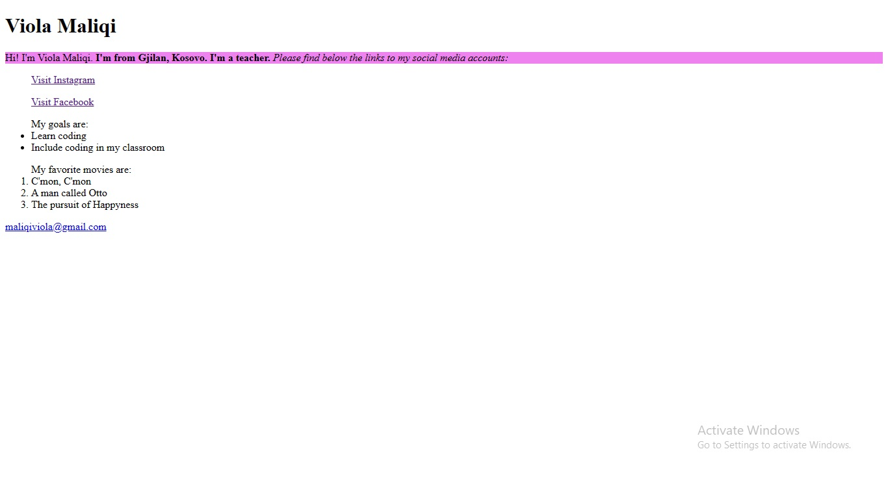
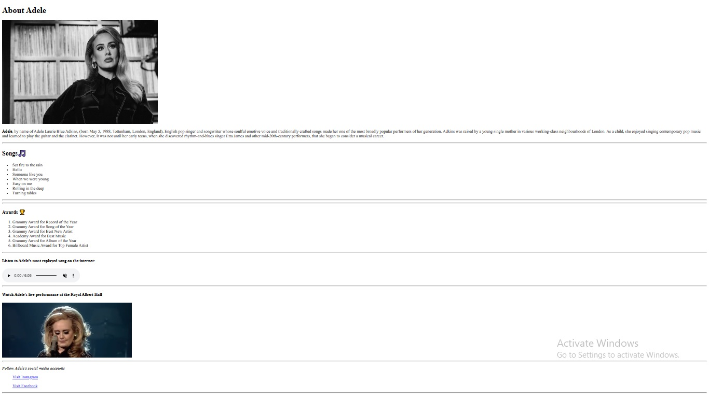
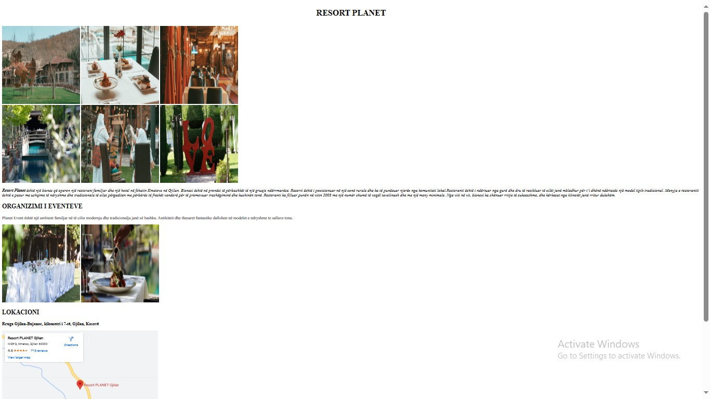

My first project is a personal platform that provides visitors with insights into who I am and my aspirations. My project features a section dedicated to my favorite movies, where I share my passion for cinema and recommend must-watch films. Lastly, it provides links to my social media handles.
In this project you will find informations about my favorite celebrity, Adele. Immerse yourself in her mesmerizing journey as you explore her life, career, and achievements. From her early beginnings to her rise to stardom, this website provides a comprehensive overview of Adele's remarkable story with audio-visuals included.
My last project is your ultimate guide to a local restaurant! On this website, you will discover the essence of the restaurant, from a warm and inviting ambiance to its delectable menu offerings. The website provides all the information you need, including reservation options, map and dining details.
